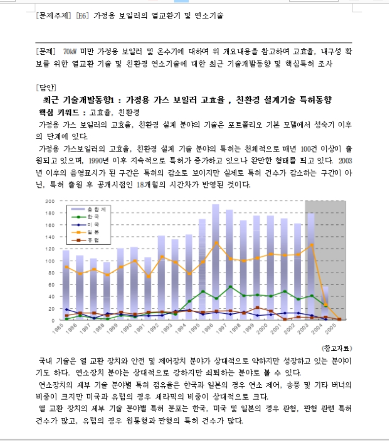

그림의 후라팬은 바람막이 후라이팬으로 야외에서 고기를 구워먹을 때 거세게 부는 바람에 애를 먹은 일이 많아서 생각하게 된 발명품이다.
다음은 2017년 한국발명진흥회가 주최한 '2017 대학창의 발명대회' 공모부분에 참여했을 때 제출했던 문서의 일부이다.
 발명 공모전에도 참가했는데, 그 때 신청한 발명 품 중 하나이다.
그림의 후라팬은 바람막이 후라이팬으로 야외에서 고기를 구워먹을 때 거세게 부는 바람에 애를 먹은 일이 많아서 생각하게 된 발명품이다.
발명품의 설명은 다음과 같다.
==> 스테인리스 재질의 후라이팬 바닥 테두리 부분에 바람막이를 끼워넣기 위한 홈을 만든다. 바람막이는 후라이팬 홈 부분에 들어가는 부분은 일자로 되어있고, 그 아래 부분은 바람을 막기 위하 치마 형태로 퍼져있다. 일자로 된 부분은 자석으로 이루어져 있어 스테인리스인 후라이팬 홈 부분에 부착시키기에 용이하다. 치마 형태로 되어있는 부분 역시 스테인리스 재질로, 불과 직접 닿아도 무방하다.
실내에서 조리할 시에는 바람막이 없이 사용하고, 야외에서 조리할 시에는 바람막이를 부착시켜 편안한 요리를 즐길 수 있다.